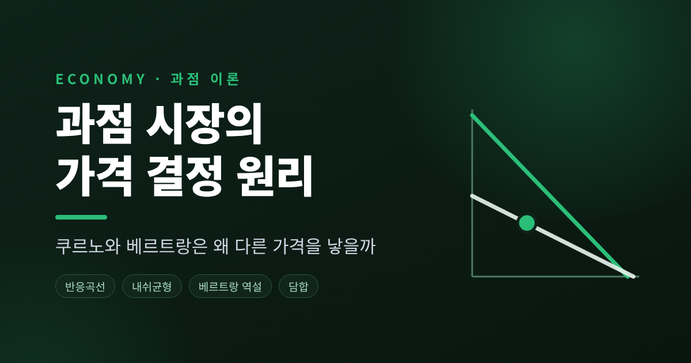
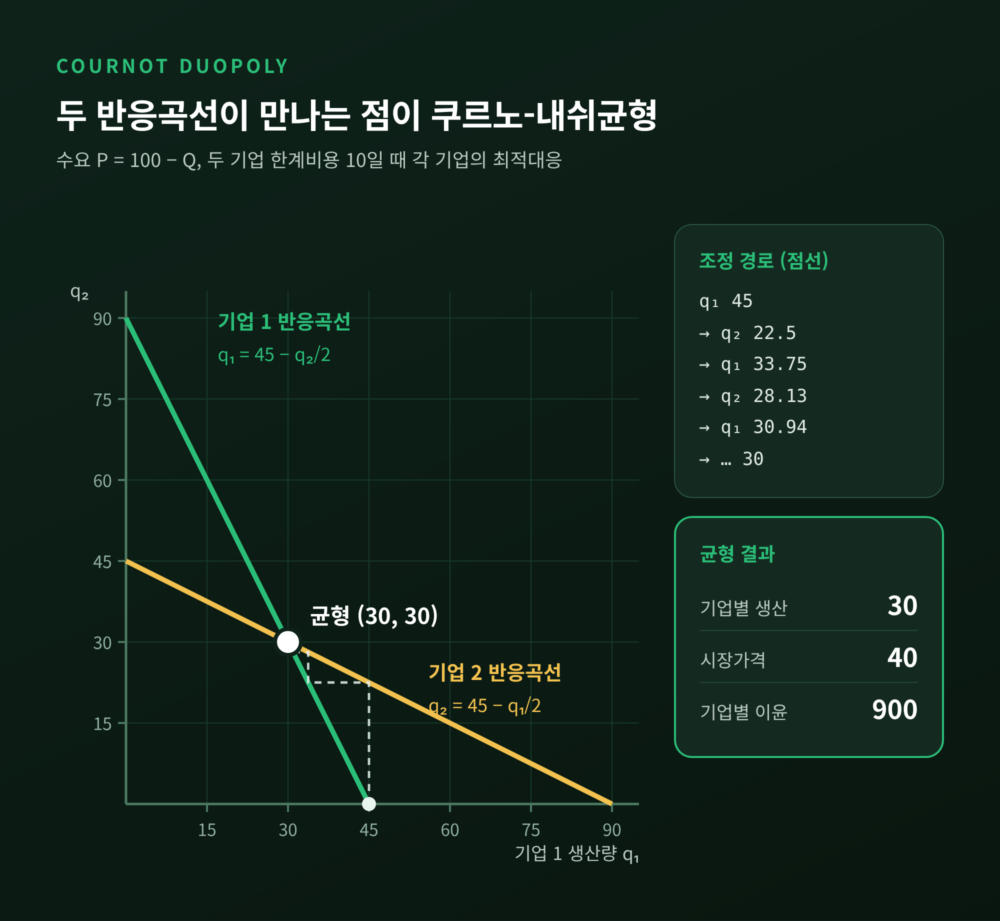
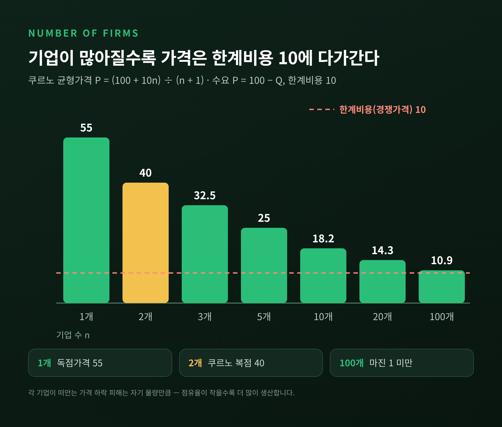
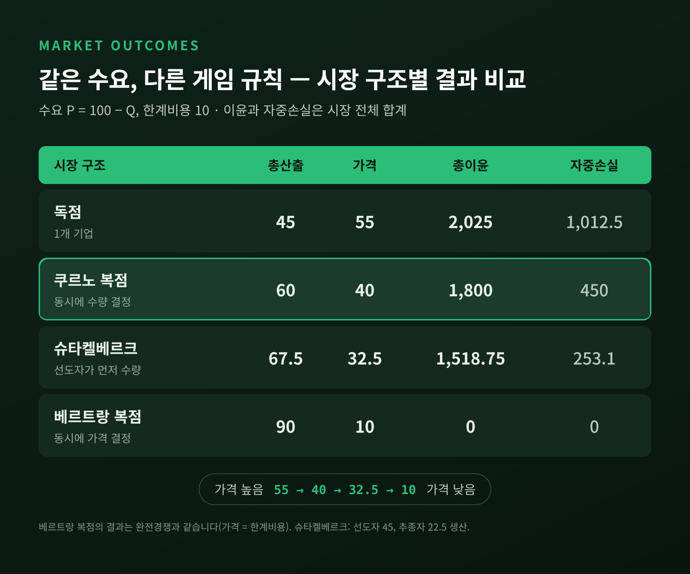
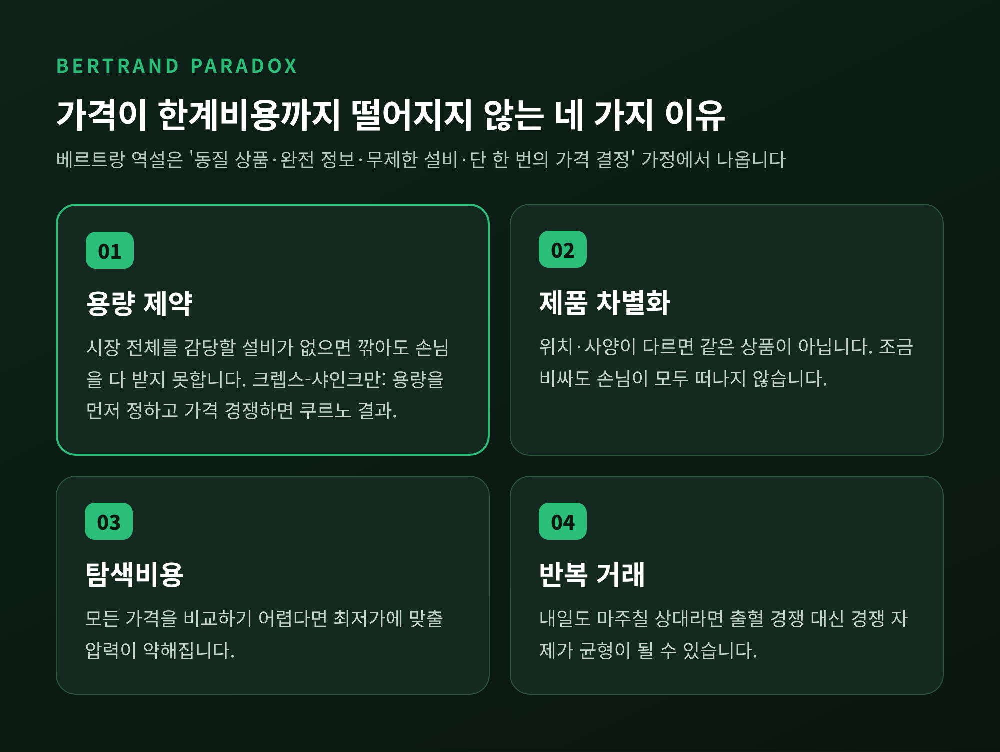
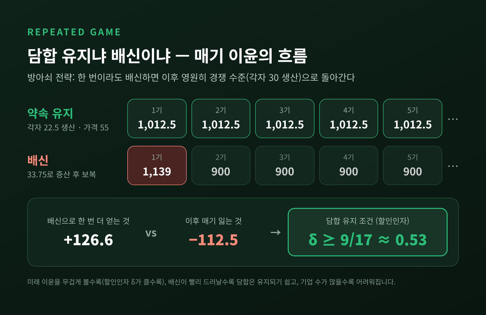
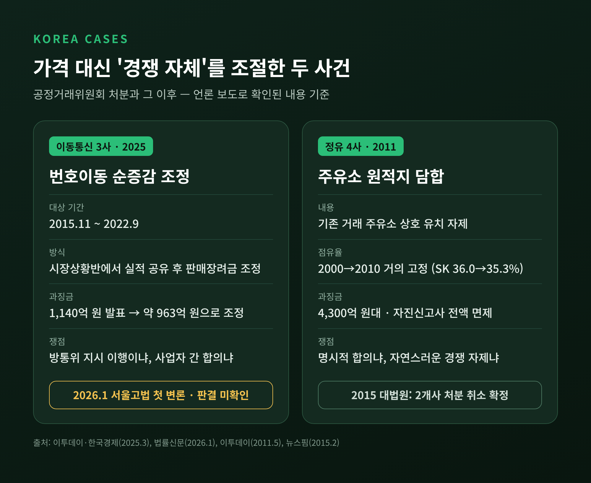

과점 시장 가격 결정 원리 — 쿠르노와 베르트랑은 왜 다른 가격을 낳을까
이번 글에서는 과점 시장에서 가격이 어떻게 정해지는지 정리해 보겠습니다. 기업 몇 곳이 시장을 나눠 가질 때, 무엇으로 경쟁하느냐에 따라 결과가 완전히 달라집니다. 간단한 숫자 예시로 균형을 직접 계산하고, 국내 사례까지 이어서 살펴봅니다.
세 줄 요약
- 생산량으로 경쟁하는 쿠르노 경쟁에서는 가격이 독점과 완전경쟁 사이에 정해지고, 기업 수가 늘수록 경쟁가격에 가까워집니다.
- 가격으로 경쟁하는 베르트랑 경쟁은 기업이 둘뿐이어도 가격이 한계비용까지 떨어진다는 '베르트랑 역설'을 낳습니다.
- 현실에서는 용량 제약·제품 차별화·반복 거래가 역설을 풀어 주며, 반복 거래는 동시에 담합의 토양이 되기도 합니다.

■ 과점은 왜 따로 공부해야 할까
완전경쟁 시장의 기업은 가격을 받아들일 뿐입니다. 독점 기업은 혼자 가격을 정합니다. 과점은 그 사이에 있습니다.
소수의 기업이 비슷한 상품을 팔기 때문에, 내 이윤이 상대의 선택에 직접 달려 있습니다. 그래서 과점 분석의 핵심은 늘 같은 질문입니다. "상대가 이렇게 나오면, 나는 어떻게 하는 것이 최선인가."
이 질문에 대한 고전적 답이 두 가지 있습니다. 1838년 프랑스의 앙투안 오귀스탱 쿠르노는 기업이 생산량을 정한다고 보았습니다. 1883년 조제프 베르트랑은 그 책의 서평에서 기업은 생산량이 아니라 가격을 고를 것이라고 반박했습니다. 같은 시장을 두고 전략 변수 하나만 바꿨을 뿐인데, 두 모형은 정반대에 가까운 결론에 도달합니다.
■ 쿠르노 경쟁 — 반응곡선이 만나는 곳이 내쉬균형
설정은 단순합니다. 두 기업이 똑같은 상품을 만들고, 동시에 그리고 서로 독립적으로 생산량을 정합니다. 두 회사의 생산량을 합친 총공급량이 시장가격을 결정합니다.
숫자로 직접 풀어 보겠습니다.
- 시장 수요: 가격 P = 100 − Q (Q는 두 기업 생산량의 합)
- 두 기업의 한계비용: 단위당 10으로 같고, 고정비는 없다고 가정
기업 1의 이윤은 (100 − q₁ − q₂ − 10) × q₁입니다. 기업 2의 생산량 q₂를 주어진 것으로 보고 이윤을 극대화하면 다음 식이 나옵니다.
q₁ = 45 − q₂ / 2
이것이 기업 1의 반응곡선(최적대응)입니다. 상대가 한 단위 더 만들면, 나는 반 단위 덜 만드는 것이 최선이라는 뜻입니다. 대칭이므로 기업 2의 반응곡선은 q₂ = 45 − q₁ / 2입니다.
두 식을 연립하면 q₁ = q₂ = 30입니다. 총생산량은 60, 시장가격은 100 − 60 = 40입니다. 기업마다 (40 − 10) × 30 = 900의 이윤을 얻습니다.
이 점에서는 어느 쪽도 혼자 생산량을 바꿀 이유가 없습니다. 서로가 서로에게 최적대응인 상태, 곧 쿠르노-내쉬균형입니다.

균형이 얼마나 안정적인지도 확인할 수 있습니다. 기업 2가 아무것도 생산하지 않는다고 보고 기업 1이 먼저 45를 만든다고 해 보겠습니다. 그러면 기업 2의 최선은 22.5, 이를 본 기업 1은 33.75, 다시 기업 2는 약 28.1로 움직입니다. 몇 차례 주고받으면 두 값 모두 30 근처로 모입니다.
비교 대상을 함께 놓으면 의미가 더 분명해집니다. 같은 수요에서 독점 기업이라면 45만 만들어 가격 55를 받고 이윤 2,025를 챙깁니다. 완전경쟁이라면 가격은 한계비용인 10까지 내려가고 90이 거래됩니다. 두 기업이 경쟁할 때의 가격 40은 정확히 그 사이에 있습니다.
다만 비효율도 남습니다. 가격이 비용보다 높아 거래되지 못한 손실, 즉 자중손실이 이 예시에서 450입니다. 독점일 때의 1,012.5보다는 작지만, 0은 아닙니다.
■ 기업 수가 늘면 가격은 왜 한계비용에 다가갈까
같은 예시를 기업 n개로 넓히면, 기업당 생산량은 90 / (n + 1), 가격은 (100 + 10n) / (n + 1)이 됩니다.

- 1개(독점): 가격 55
- 2개: 40
- 3개: 32.5
- 5개: 25
- 10개: 약 18.2
- 100개: 약 10.9
가격에서 한계비용을 뺀 마진은 45에서 30, 15, 8을 거쳐 1 미만까지 줄어듭니다.
이유는 직관적입니다. 기업이 생산을 한 단위 늘리면 시장가격이 조금 내려갑니다. 그 하락의 피해는 자기 물량만큼만 떠안습니다. 시장 점유율이 작을수록 가격 하락을 덜 신경 쓰게 되고, 그만큼 생산을 더 늘립니다.
경제학 교재는 이를 이렇게 요약합니다. n개의 동일한 기업이 수량으로 경쟁하는 산업은, 수요 탄력성이 n배 큰 시장을 마주한 독점처럼 행동한다는 것입니다. 가격 대비 마진, 곧 (가격 − 한계비용) ÷ 가격은 기업마다 '시장점유율 ÷ 수요 탄력성'으로 정리됩니다. 시장 전체로 보면 이 마진의 가중평균은 점유율 제곱의 합인 허핀달-허쉬만 지수(HHI)를 탄력성으로 나눈 값이 됩니다. 시장 집중도 지표인 HHI가 가격 결정력과 이어지는 이론적 고리가 여기에 있습니다.
■ 베르트랑 역설 — 기업 둘이면 충분하다는 이상한 결론
이번에는 같은 시장에서 기업이 가격을 정한다고 해 보겠습니다. 상품이 똑같고, 소비자는 모든 가격을 공짜로 비교할 수 있으며, 각 기업은 시장 전체 수요를 감당할 설비가 있다고 가정합니다.
두 기업이 모두 40을 받고 있다면 어떻게 될까요. 한쪽이 39.9로 내리는 순간 손님 전부를 가져갑니다. 상대도 가만히 있지 않습니다. 이 깎아내리기는 가격이 한계비용인 10에 닿을 때까지 이어집니다.
결국 유일한 균형은 두 기업 모두 한계비용으로 파는 것입니다. 이윤은 0입니다. 경쟁자가 단 둘뿐인데도 완전경쟁과 같은 결과가 나옵니다. 이것이 베르트랑 역설입니다.
역설이라 부르는 이유는 현실과 맞지 않기 때문입니다. 소수 기업이 지배하는 시장에서 가격이 원가 수준까지 떨어지는 일은 드뭅니다. 게다가 이윤이 0이라면 공장을 짓는 데 든 고정비조차 회수할 수 없습니다.

두 모형의 차이는 전략 변수의 성격에서 나옵니다. 쿠르노의 생산량은 전략적 대체재입니다. 상대가 많이 만들면 나는 덜 만듭니다. 베르트랑의 가격은 전략적 보완재입니다. 상대가 내리면 나도 내려야 합니다. 그래서 가격 경쟁이 대체로 더 치열한 결과를 낳습니다.
어느 모형이 맞느냐는 시장에 달려 있습니다. 생산량을 미리 확정해야 하는 산업이라면 쿠르노가, 설비와 산출을 쉽게 바꿀 수 있는 산업이라면 베르트랑이 더 잘 맞는다고 봅니다. 어느 한쪽이 언제나 옳은 것은 아닙니다.
■ 역설이 풀리는 방식 — 용량, 차별화, 그리고 크렙스-샤인크만
베르트랑 역설은 몇 가지 가정 위에 서 있습니다. MIT 강의노트는 이를 네 가지로 정리합니다. 소비자가 모든 가격을 안다, 수요가 조금만 싸도 한쪽으로 몽땅 쏠린다, 가격을 한 번만 정한다, 모든 수요를 즉시 채울 수 있다. 하나만 무너져도 결론이 달라집니다.

첫째, 용량 제약입니다. 에지워스는 한 기업이 시장 전체를 감당할 수 없다면 가격이 한계비용까지 내려가지 않을 수 있음을 보였습니다. 작은 마을의 호텔 두 곳을 떠올리면 쉽습니다. 각자 방이 모자라니, 가격을 깎아 손님을 다 끌어와도 받을 수가 없습니다. 설비가 부족하다는 사실 자체가 "상대를 무리하게 깎지 않겠다"는 믿을 만한 약속이 됩니다.
둘째, 크렙스-샤인크만의 결과입니다. 1983년 데이비드 크렙스와 호세 샤인크만은 이 생각을 2단계 게임으로 정리했습니다. 1단계에서 두 기업이 동시에 생산 용량을 정해 공개하고, 2단계에서 가격으로 경쟁합니다. 그 결과 유일한 균형은 놀랍게도 쿠르노 결과와 같았습니다. 가격으로 싸우더라도, 미리 깔아 둔 설비가 경쟁의 크기를 정한다는 뜻입니다. 두 사람의 결론은 "과점의 결과는 전략 변수와 게임의 형태에 함께 달려 있다"는 것이었습니다.
물론 한계도 있습니다. 이 결과는 남는 수요를 누가 먼저 사 가느냐에 대한 특정 가정, 이른바 '효율적 배분 규칙'에서 성립합니다. 다른 배분 규칙에서는 추가 조건이 필요하다는 후속 연구가 있습니다. 상당히 양식화된 모형이라는 점은 감안해야 합니다.
셋째, 제품 차별화와 탐색비용입니다. 커피숍이나 세탁소는 위치만 달라도 같은 상품이 아닙니다. 소비자가 모든 가격을 비교하기 어렵다면 기업은 비용보다 높은 가격을 유지할 수 있습니다. 매트리스 업체가 매장마다 모델명을 바꿔 비교를 어렵게 하는 사례가 강의노트에 소개될 정도입니다.
넷째, 반복 거래입니다. 길 건너 마주 보는 두 주유소는 오늘만 경쟁하지 않습니다. 이 마지막 열쇠는 담합 이야기로 이어집니다.
■ 슈타켈베르크 선도자 — 먼저 움직이는 쪽의 이점
앞의 모형은 두 기업이 동시에 움직인다고 봅니다. 1934년 하인리히 폰 슈타켈베르크는 한 기업이 먼저 생산량을 정하고, 다른 기업이 이를 본 뒤 따라가는 경우를 분석했습니다.
풀이는 뒤에서부터 합니다. 선도자는 추종자의 반응곡선(q₂ = 45 − q₁ / 2)을 미리 알고, 그 반응까지 계산에 넣어 자기 생산량을 고릅니다.
앞의 예시에 대입하면 이렇습니다.
- 선도자: 45 생산, 이윤 1,012.5
- 추종자: 22.5 생산, 이윤 506.25
- 총생산 67.5, 가격 32.5
쿠르노에서 각자 900을 벌던 것과 비교하면, 선도자는 늘고 추종자는 줄었습니다. 총생산은 동시에 정할 때보다 많고 가격은 낮아 소비자에게는 더 유리합니다.
핵심은 공약(commitment)입니다. 선도자는 이미 정한 생산량을 되돌릴 수 없다는 점을 상대가 믿어야 합니다. 대규모 설비를 먼저 지은 기존 기업이 신규 진입자를 상대할 때가 전형적인 예입니다. 상대가 선도자의 선택을 관찰할 수 없다면, 게임은 다시 쿠르노로 돌아갑니다.
■ 담합은 왜 불안정하고, 무엇이 그것을 지탱할까
두 기업이 앞의 균형에 머무는 대신 독점처럼 행동하기로 약속하면 어떨까요. 독점 생산량 45를 반씩, 즉 22.5씩 만들면 가격은 55가 되고 각자 1,012.5를 법니다. 900보다 많습니다.
문제는 배신의 유혹입니다. 상대가 약속대로 22.5를 지킨다면, 나는 33.75를 만들 때 가장 많이 법니다. 가격은 43.75로 내려가지만 내 이윤은 약 1,139로 뜁니다. 상대도 같은 계산을 합니다. 일회성 게임에서 담합이 깨지는 이유, 죄수의 딜레마와 같은 구조입니다.
그런데 게임이 끝없이 반복되면 사정이 달라집니다. "한 번이라도 배신하면 그 뒤로는 영원히 원래의 경쟁 수준(각자 30 생산)으로 돌아간다"는 방아쇠 전략을 생각해 보겠습니다. 배신은 이번 한 번 약 127을 더 얻는 대신, 이후 매 기간 112.5씩을 잃는 선택이 됩니다.

미래 이윤을 현재 가치로 얼마나 무겁게 보느냐를 나타내는 값을 할인인자라고 합니다. 이 예시에서 할인인자가 9/17(약 0.53) 이상이면 배신하지 않는 편이 낫습니다. MIT 게임이론 교재의 계산과도 일치하는 값이고, 가격 경쟁에서의 기준은 1/2입니다.
여기서 몇 가지 시사점이 나옵니다.
- 미래를 중시할수록, 즉 거래가 오래 이어질 것으로 기대할수록 공조는 쉬워집니다.
- 배신이 빨리 드러나고 즉시 보복할 수 있을수록 유지가 쉽습니다. 실적을 서로 공유하는 장치가 위험한 이유입니다.
- 참여 기업이 많을수록 이 기준값은 1에 가까워져, 큰 카르텔일수록 유지가 어렵습니다.
반복게임에서는 이처럼 명시적 계약 없이도 경쟁 자제가 유지될 수 있습니다. 이론적으로 '포크 정리'라 불리는 결과입니다. 동시에 이것은 경쟁 당국이 마주하는 어려움이기도 합니다.
■ 국내 과점 시장 사례 — 이동통신과 정유
예전에는 짬짜미라고 하면 가격을 직접 맞추는 모습을 떠올렸습니다. 지금 공정거래위원회가 문제 삼는 사건들은 그보다 훨씬 간접적인 형태를 띱니다.

이동통신 3사 번호이동 담합 (2025) 공정위는 2025년 3월 SK텔레콤·KT·LG유플러스에 시정명령과 과징금 1,140억 2,600만 원을 발표했습니다. 발표 당시 기준으로 SK텔레콤 426억 원, LG유플러스 383억 원, KT 330억 원입니다. 공정위 판단에 따르면 3사는 2015년 11월부터 2022년 9월까지 번호이동 순증감이 특정 회사에 쏠리지 않도록 합의했습니다. 한국정보통신진흥협회(KAIT)와 함께 운영한 '시장상황반'에서 실적을 실시간으로 공유하고, 격차가 벌어지면 판매장려금을 조정했다는 것입니다.
공정위가 제시한 수치는 이렇습니다. 하루 평균 번호이동 순증감은 2014년 3,000여 건에서 2016년 200건 이내로 줄었습니다. 하루 평균 번호이동 건수는 2014년 2만 8,872건에서 2022년 7,210건까지 감소했습니다. 가격이 아니라 가입자 쟁탈 경쟁 자체를 서로 조절한 셈입니다. 앞서 본 '실적 공유를 통한 배신 감시' 구조와 닮아 있습니다.
통신사들의 반론도 분명합니다. 단통법 시행 이후 방송통신위원회의 지시와 가이드라인을 따랐을 뿐이고, 번호이동 감소는 단말기 가격 상승과 결합상품 확대 때문이라는 주장입니다. 법률신문 보도에 따르면 과징금은 이후 약 963억 원(SK텔레콤 약 388억, KT 약 299억, LG유플러스 약 276억 원)으로 조정됐습니다. 2026년 1월 서울고법에서 KT 사건 첫 변론이 열렸고, 재판부는 방통위가 상황반에 관여한 정도를 더 따져 봐야 한다고 밝혔습니다. 이 글을 쓰는 시점까지 최종 판결은 확인되지 않았습니다.
정유 4사 주유소 원적지 담합 (2011) 공정위는 2011년 SK·GS칼텍스·현대오일뱅크·S-OIL이 기존 거래 주유소, 이른바 '원적지' 주유소를 서로 빼앗지 않기로 합의했다며 4,300억 원대 과징금을 부과했습니다. 가격을 직접 정하지는 않았지만, 거래처 확보 경쟁을 막아 가격 인하를 억눌렀다는 판단이었습니다. 실제로 2000년부터 2010년까지 4사의 점유율은 거의 움직이지 않았습니다(SK 36.0%→35.3%, GS칼텍스 26.5%→26.8% 등).
그러나 2015년 대법원은 현대오일뱅크와 S-OIL에 대한 처분을 취소한 원심을 확정했습니다. 합의의 존재가 입증되지 않았다는 이유였습니다. 과거 과잉 유치 경쟁으로 손실을 본 정유사들이 별도 협의 없이도 경쟁을 자제하는 관행이 생겼을 수 있다고 본 것입니다. 담합 사실을 자진신고한 GS칼텍스는 과징금 전액을 면제받았습니다.
이 판결은 이론과 법의 간극을 잘 보여 줍니다. 반복게임에서는 말 한마디 없이도 경쟁 자제가 균형이 될 수 있습니다. 하지만 법은 '합의'를 입증해야 처벌할 수 있습니다. 과점 시장 규제가 늘 어려운 이유입니다.
정리하면 이렇습니다.
과점 시장의 가격은 기업 수만으로 정해지지 않습니다. 무엇으로 경쟁하는지, 누가 먼저 움직이는지, 설비를 얼마나 깔아 두었는지, 그리고 이 게임이 얼마나 오래 반복되는지가 함께 결정합니다. 쿠르노와 베르트랑의 차이는 전략 변수 하나였지만, 그 하나가 가격 40과 가격 10을 갈랐습니다.
"경쟁의 강도는 경쟁자의 숫자가 아니라 게임의 규칙에서 나온다."
이 모형들이 현실을 그대로 옮긴 것은 아닙니다. 그래도 휴대폰 보조금이 왜 갑자기 조용해지는지, 주유소 간판은 왜 좀처럼 바뀌지 않는지 궁금해질 때, 반응곡선 두 개를 떠올려 보시길 권합니다. 뉴스 속 숫자가 조금 다르게 읽히실 것입니다.
■ 참고 자료
- INOMICS — Cournot Competition
- Wikipedia — Bertrand competition
- Wikipedia — Stackelberg competition
- Kreps & Scheinkman (1983), Bell Journal of Economics 14(2) — IDEAS/RePEc
- Lepore (2009), Consumer Rationing and the Cournot Outcome — IDEAS/RePEc
- MIT OCW 14.27 Lecture 2 — Bertrand 모형과 역설
- MIT OCW 14.12 Chapter 13 — Implicit Cartels
- Introduction to Economic Analysis 17.1 — Cournot Oligopoly
- 이투데이 — 이동통신 3사 과징금 1140억2600만 원 (2025.3.12)
- 한국경제 — 통신 3사 "하란 대로 했다" (2025.3.12)
- 법률신문 — KT 1월 15일 취소소송 첫 변론 (2026.1.3)
- 법률신문 — KT "번호이동 담합 안 해… 방통위 지시" (2026.1.17)
- 이투데이 — 공정위, 정유사 원적지 담합 과징금 4348억원 (2011.5.26)
- 뉴스핌 — 정유사 원적지 담합 대법원 판결 (2015.2.10)
#과점시장 #쿠르노경쟁 #베르트랑역설 #내쉬균형 #슈타켈베르크 #담합 #반복게임 #공정거래위원회 #미시경제학